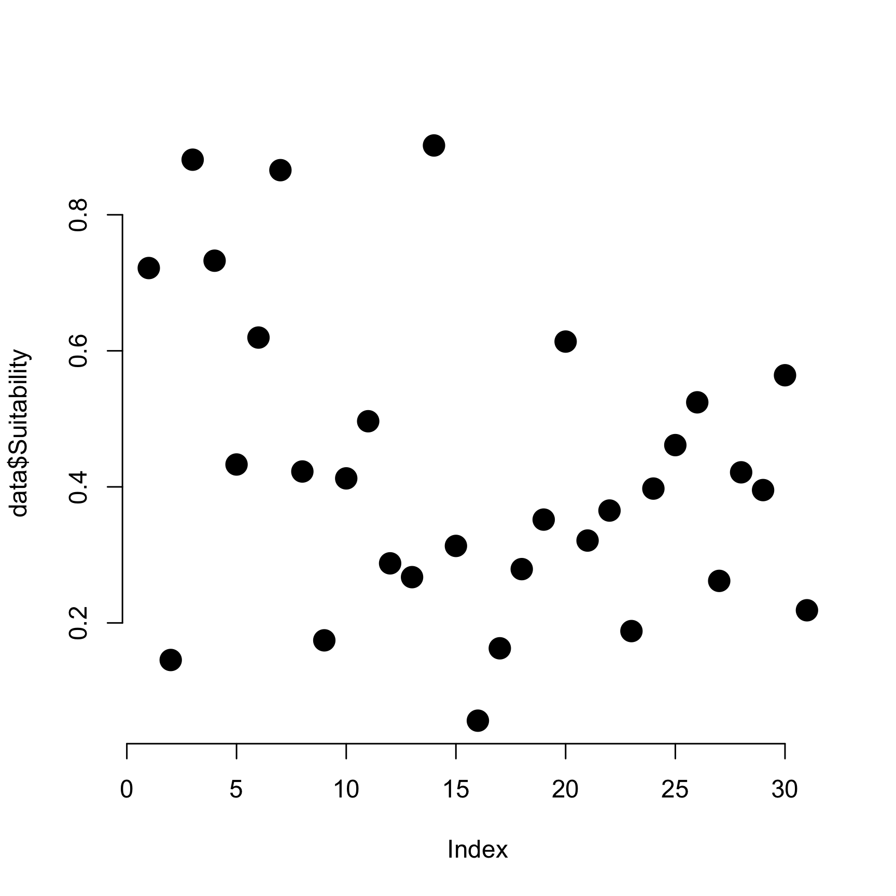
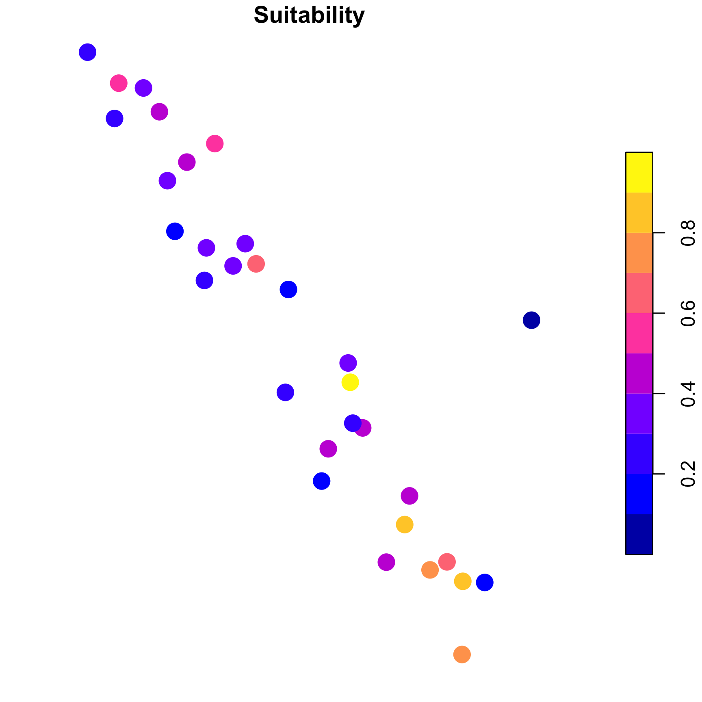
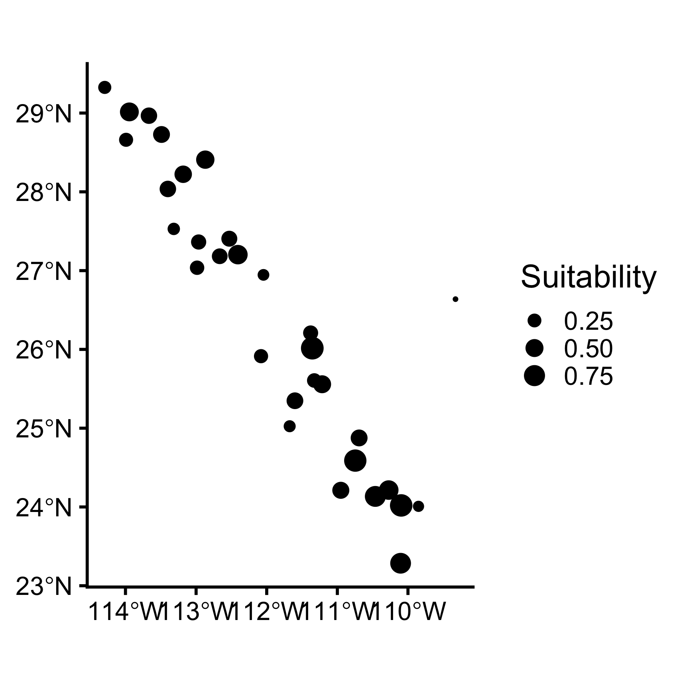
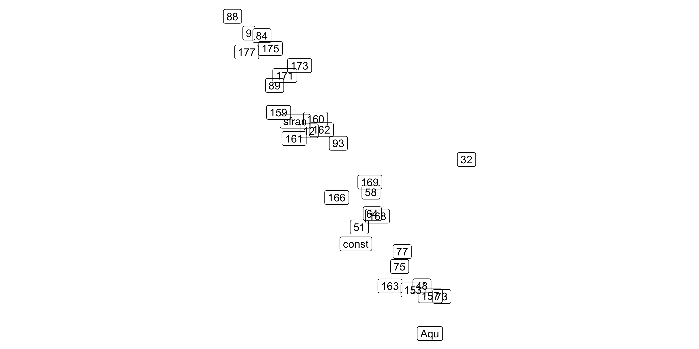
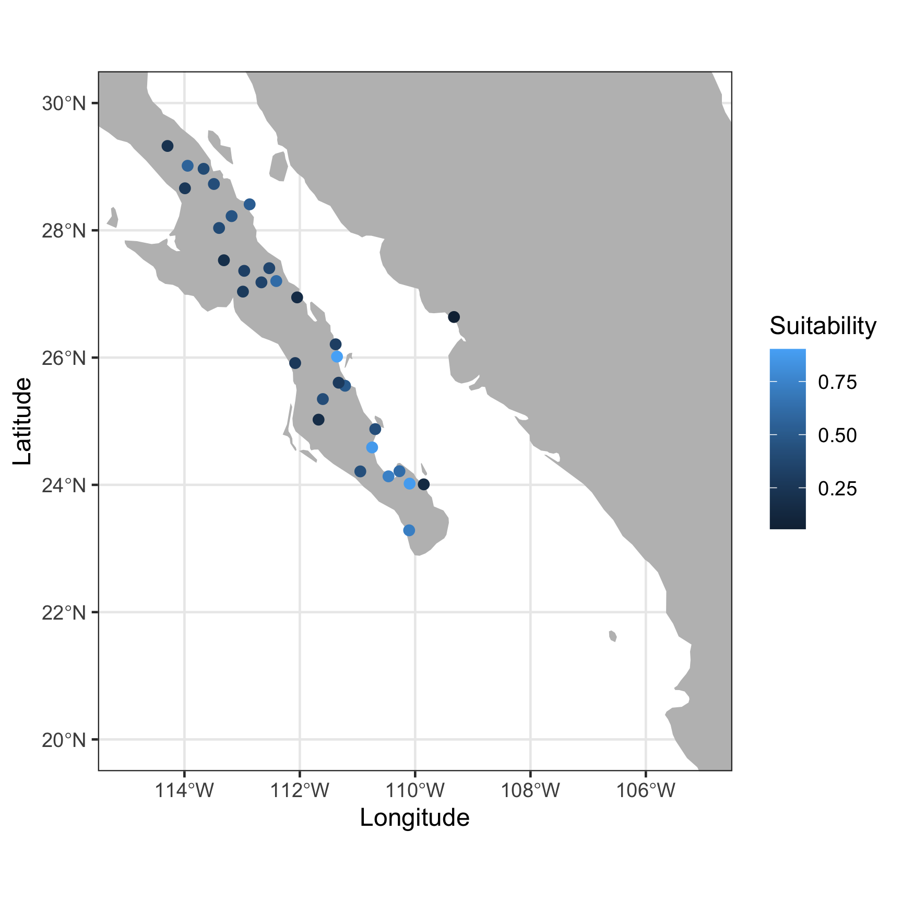
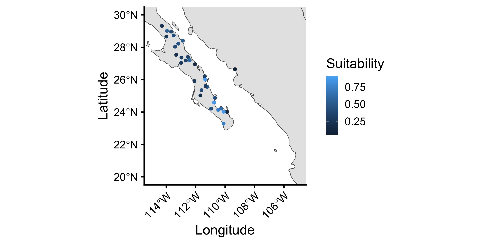

long lat group order region subregion
1 -87.46201 30.38968 1 1 alabama <NA>
2 -87.48493 30.37249 1 2 alabama <NA>
3 -87.52503 30.37249 1 3 alabama <NA>
4 -87.53076 30.33239 1 4 alabama <NA>
5 -87.57087 30.32665 1 5 alabama <NA>
6 -87.58806 30.32665 1 6 alabama <NA>
7 -87.59379 30.30947 1 7 alabama <NA>
8 -87.59379 30.28655 1 8 alabama <NA>
9 -87.67400 30.27509 1 9 alabama <NA>
10 -87.81152 30.25790 1 10 alabama <NA>
11 -87.88026 30.24644 1 11 alabama <NA>
12 -87.92037 30.24644 1 12 alabama <NA>
13 -87.95475 30.24644 1 13 alabama <NA>
14 -88.00632 30.24071 1 14 alabama <NA>
15 -88.01778 30.25217 1 15 alabama <NA>
16 -88.01205 30.26936 1 16 alabama <NA>
17 -87.99486 30.27509 1 17 alabama <NA>
18 -87.95475 30.27509 1 18 alabama <NA>
19 -87.90318 30.28082 1 19 alabama <NA>
20 -87.82870 30.28655 1 20 alabama <NA>
21 -87.80006 30.28655 1 21 alabama <NA>
22 -87.80006 30.32665 1 22 alabama <NA>
23 -87.81724 30.34385 1 23 alabama <NA>
24 -87.84016 30.38395 1 24 alabama <NA>
25 -87.85162 30.40114 1 25 alabama <NA>
26 -87.87453 30.41260 1 26 alabama <NA>
27 -87.90318 30.42406 1 27 alabama <NA>
28 -87.92610 30.44698 1 28 alabama <NA>
29 -87.93183 30.49281 1 29 alabama <NA>
30 -87.94329 30.52719 1 30 alabama <NA>
31 -87.92037 30.56157 1 31 alabama <NA>
32 -87.91464 30.58449 1 32 alabama <NA>
33 -87.92610 30.61886 1 33 alabama <NA>
34 -87.92037 30.67043 1 34 alabama <NA>
35 -87.94902 30.69908 1 35 alabama <NA>
36 -87.98913 30.79075 1 36 alabama <NA>
37 -88.00632 30.79648 1 37 alabama <NA>
38 -88.01778 30.80221 1 38 alabama <NA>
39 -88.03497 30.79075 1 39 alabama <NA>
40 -88.04642 30.75638 1 40 alabama <NA>
41 -88.05215 30.72773 1 41 alabama <NA>
42 -88.05215 30.71054 1 42 alabama <NA>
43 -88.06361 30.68762 1 43 alabama <NA>
44 -88.06934 30.68189 1 44 alabama <NA>
45 -88.08080 30.63033 1 45 alabama <NA>
46 -88.08080 30.61314 1 46 alabama <NA>
47 -88.09799 30.60741 1 47 alabama <NA>
48 -88.10944 30.59595 1 48 alabama <NA>
49 -88.11518 30.58449 1 49 alabama <NA>
50 -88.10944 30.55584 1 50 alabama <NA>
51 -88.12091 30.48136 1 51 alabama <NA>
52 -88.12091 30.44125 1 52 alabama <NA>
53 -88.12664 30.38968 1 53 alabama <NA>
54 -88.13237 30.36103 1 54 alabama <NA>
55 -88.14383 30.34385 1 55 alabama <NA>
56 -88.16102 30.33812 1 56 alabama <NA>
57 -88.17248 30.33812 1 57 alabama <NA>
58 -88.18966 30.35530 1 58 alabama <NA>
59 -88.22404 30.37822 1 59 alabama <NA>
60 -88.23550 30.39541 1 60 alabama <NA>
61 -88.28706 30.40114 1 61 alabama <NA>
62 -88.31571 30.40114 1 62 alabama <NA>
63 -88.33290 30.40114 1 63 alabama <NA>
64 -88.35010 30.42406 1 64 alabama <NA>
65 -88.39021 30.41260 1 65 alabama <NA>
66 -88.40739 30.73346 1 66 alabama <NA>
67 -88.41885 30.99702 1 67 alabama <NA>
68 -88.43031 31.12307 1 68 alabama <NA>
69 -88.45322 31.43247 1 69 alabama <NA>
70 -88.46468 31.69603 1 70 alabama <NA>
71 -88.47614 31.89083 1 71 alabama <NA>
72 -88.43031 32.22314 1 72 alabama <NA>
73 -88.43031 32.30909 1 73 alabama <NA>
74 -88.39021 32.57838 1 74 alabama <NA>
75 -88.35010 32.92215 1 75 alabama <NA>
76 -88.33863 32.98518 1 76 alabama <NA>
77 -88.29853 33.28312 1 77 alabama <NA>
78 -88.27560 33.52949 1 78 alabama <NA>
79 -88.25269 33.73576 1 79 alabama <NA>
80 -88.20686 34.06234 1 80 alabama <NA>
81 -88.20686 34.07953 1 81 alabama <NA>
82 -88.18394 34.31444 1 82 alabama <NA>
83 -88.16675 34.46341 1 83 alabama <NA>
84 -88.14955 34.58373 1 84 alabama <NA>
85 -88.10944 34.89886 1 85 alabama <NA>
86 -88.13237 34.90459 1 86 alabama <NA>
87 -88.16675 34.95043 1 87 alabama <NA>
88 -88.18966 34.99627 1 88 alabama <NA>
89 -88.18394 35.01345 1 89 alabama <NA>
90 -87.98913 35.01345 1 90 alabama <NA>
91 -87.60525 35.00772 1 91 alabama <NA>
92 -87.22710 35.00199 1 92 alabama <NA>
93 -87.20417 35.00199 1 93 alabama <NA>
94 -86.82603 34.99627 1 94 alabama <NA>
95 -86.78019 34.99053 1 95 alabama <NA>
96 -86.31036 34.99053 1 96 alabama <NA>
97 -85.85200 34.98480 1 97 alabama <NA>
98 -85.61135 34.97907 1 98 alabama <NA>
99 -85.58844 34.84156 1 99 alabama <NA>
100 -85.54260 34.61811 1 100 alabama <NA>
101 -85.52541 34.58373 1 101 alabama <NA>
102 -85.46812 34.26287 1 102 alabama <NA>
103 -85.42801 34.07953 1 103 alabama <NA>
104 -85.40509 33.95921 1 104 alabama <NA>
105 -85.39363 33.90764 1 105 alabama <NA>
106 -85.34779 33.66127 1 106 alabama <NA>
107 -85.31342 33.49511 1 107 alabama <NA>
108 -85.29623 33.43209 1 108 alabama <NA>
109 -85.24466 33.11696 1 109 alabama <NA>
110 -85.23893 33.10550 1 110 alabama <NA>
111 -85.19309 32.87059 1 111 alabama <NA>
112 -85.19309 32.85913 1 112 alabama <NA>
113 -85.17018 32.84194 1 113 alabama <NA>
114 -85.14725 32.79037 1 114 alabama <NA>
115 -85.13007 32.76746 1 115 alabama <NA>
116 -85.13007 32.75027 1 116 alabama <NA>
117 -85.12434 32.73308 1 117 alabama <NA>
118 -85.10142 32.67578 1 118 alabama <NA>
119 -85.10142 32.63567 1 119 alabama <NA>
120 -85.06704 32.60703 1 120 alabama <NA>
121 -85.04986 32.55546 1 121 alabama <NA>
122 -85.00975 32.52682 1 122 alabama <NA>
123 -84.98683 32.49817 1 123 alabama <NA>
124 -84.99256 32.46952 1 124 alabama <NA>
125 -84.97537 32.42368 1 125 alabama <NA>
126 -84.98109 32.37785 1 126 alabama <NA>
127 -85.00402 32.33774 1 127 alabama <NA>
128 -84.97537 32.30909 1 128 alabama <NA>
129 -84.92381 32.28044 1 129 alabama <NA>
130 -84.90089 32.25179 1 130 alabama <NA>
131 -84.92953 32.23461 1 131 alabama <NA>
132 -84.95245 32.22887 1 132 alabama <NA>
133 -84.96964 32.20023 1 133 alabama <NA>
134 -84.99256 32.18304 1 134 alabama <NA>
135 -85.04986 32.16012 1 135 alabama <NA>
136 -85.06131 32.12001 1 136 alabama <NA>
137 -85.06131 32.10283 1 137 alabama <NA>
138 -85.06131 32.08564 1 138 alabama <NA>
139 -85.06131 32.06272 1 139 alabama <NA>
140 -85.06131 32.02834 1 140 alabama <NA>
141 -85.06131 31.99396 1 141 alabama <NA>
142 -85.07851 31.95959 1 142 alabama <NA>
143 -85.10715 31.93667 1 143 alabama <NA>
144 -85.14153 31.86791 1 144 alabama <NA>
145 -85.13580 31.78770 1 145 alabama <NA>
146 -85.13580 31.77624 1 146 alabama <NA>
147 -85.13007 31.73040 1 147 alabama <NA>
148 -85.11861 31.68456 1 148 alabama <NA>
149 -85.07851 31.61581 1 149 alabama <NA>
150 -85.06131 31.55852 1 150 alabama <NA>
151 -85.06131 31.52414 1 151 alabama <NA>
152 -85.08424 31.47830 1 152 alabama <NA>
153 -85.08424 31.44392 1 153 alabama <NA>
154 -85.09570 31.40955 1 154 alabama <NA>
155 -85.09570 31.34079 1 155 alabama <NA>
156 -85.10142 31.30068 1 156 alabama <NA>
157 -85.12434 31.28349 1 157 alabama <NA>
158 -85.12434 31.25485 1 158 alabama <NA>
159 -85.11288 31.19182 1 159 alabama <NA>
160 -85.11288 31.17463 1 160 alabama <NA>
161 -85.08997 31.14026 1 161 alabama <NA>
162 -85.04413 31.11161 1 162 alabama <NA>
163 -85.03840 31.09442 1 163 alabama <NA>
164 -85.03267 31.07723 1 164 alabama <NA>
165 -85.03267 31.03712 1 165 alabama <NA>
166 -85.01548 31.00275 1 166 alabama <NA>
167 -85.01548 30.99702 1 167 alabama <NA>
168 -85.49677 31.00847 1 168 alabama <NA>
169 -85.51968 31.00847 1 169 alabama <NA>
170 -86.04680 31.00847 1 170 alabama <NA>
171 -86.20150 31.00847 1 171 alabama <NA>
172 -86.39057 31.00847 1 172 alabama <NA>
173 -86.70570 31.00847 1 173 alabama <NA>
174 -86.79737 31.00847 1 174 alabama <NA>
175 -87.18126 31.00847 1 175 alabama <NA>
176 -87.60525 31.00847 1 176 alabama <NA>
177 -87.60525 30.95691 1 177 alabama <NA>
178 -87.61097 30.93399 1 178 alabama <NA>
179 -87.63390 30.89962 1 179 alabama <NA>
180 -87.63963 30.87670 1 180 alabama <NA>
181 -87.63390 30.85951 1 181 alabama <NA>
182 -87.61097 30.84232 1 182 alabama <NA>
183 -87.54795 30.77356 1 183 alabama <NA>
184 -87.49065 30.72200 1 184 alabama <NA>
185 -87.46201 30.71054 1 185 alabama <NA>
186 -87.45055 30.69908 1 186 alabama <NA>
187 -87.42190 30.67616 1 187 alabama <NA>
188 -87.41044 30.64751 1 188 alabama <NA>
189 -87.41044 30.61886 1 189 alabama <NA>
190 -87.43336 30.58449 1 190 alabama <NA>
191 -87.46201 30.54438 1 191 alabama <NA>
192 -87.46774 30.52719 1 192 alabama <NA>
193 -87.46201 30.51000 1 193 alabama <NA>
194 -87.44482 30.49281 1 194 alabama <NA>
195 -87.39899 30.45844 1 195 alabama <NA>
196 -87.39326 30.44698 1 196 alabama <NA>
197 -87.40472 30.42979 1 197 alabama <NA>
198 -87.42190 30.42979 1 198 alabama <NA>
199 -87.43909 30.42406 1 199 alabama <NA>
200 -87.43909 30.41833 1 200 alabama <NA>
201 -87.45055 30.40114 1 201 alabama <NA>
202 -87.46201 30.38968 1 202 alabama <NA>
203 -114.63739 35.01918 2 204 arizona <NA>
204 -114.64313 35.10512 2 205 arizona <NA>
205 -114.60302 35.12231 2 206 arizona <NA>
206 -114.57436 35.17961 2 207 arizona <NA>
207 -114.58583 35.23690 2 208 arizona <NA>
208 -114.59728 35.28274 2 209 arizona <NA>
209 -114.60874 35.35723 2 210 arizona <NA>
210 -114.62594 35.40879 2 211 arizona <NA>
211 -114.66605 35.45463 2 212 arizona <NA>
212 -114.66031 35.50047 2 213 arizona <NA>
213 -114.66605 35.54057 2 214 arizona <NA>
214 -114.67178 35.60933 2 215 arizona <NA>
215 -114.68324 35.66662 2 216 arizona <NA>
216 -114.70042 35.71246 2 217 arizona <NA>
217 -114.70042 35.79268 2 218 arizona <NA>
218 -114.68896 35.88435 2 219 arizona <NA>
219 -114.71188 35.91299 2 220 arizona <NA>
220 -114.73480 35.95883 2 221 arizona <NA>
221 -114.73480 36.01613 2 222 arizona <NA>
222 -114.75771 36.06197 2 223 arizona <NA>
223 -114.73480 36.10780 2 224 arizona <NA>
224 -114.70042 36.11926 2 225 arizona <NA>
225 -114.64313 36.14218 2 226 arizona <NA>
226 -114.55718 36.15364 2 227 arizona <NA>
227 -114.48843 36.13645 2 228 arizona <NA>
228 -114.39675 36.13645 2 229 arizona <NA>
229 -114.32800 36.11353 2 230 arizona <NA>
230 -114.31081 36.04478 2 231 arizona <NA>
231 -114.26498 36.02758 2 232 arizona <NA>
232 -114.20194 36.02186 2 233 arizona <NA>
233 -114.13892 36.03905 2 234 arizona <NA>
234 -114.11600 36.09634 2 235 arizona <NA>
235 -114.08163 36.13645 2 236 arizona <NA>
236 -114.05298 36.21093 2 237 arizona <NA>
237 -114.04725 36.84119 2 238 arizona <NA>
238 -114.04152 36.99588 2 239 arizona <NA>
239 -113.82380 36.99588 2 240 arizona <NA>
240 -113.53732 37.00161 2 241 arizona <NA>
241 -113.27949 37.00161 2 242 arizona <NA>
242 -113.00447 37.00161 2 243 arizona <NA>
243 -112.90707 36.99588 2 244 arizona <NA>
244 -112.72945 37.00161 2 245 arizona <NA>
245 -112.54037 36.99588 2 246 arizona <NA>
246 -112.41432 36.99588 2 247 arizona <NA>
247 -112.20805 36.99588 2 248 arizona <NA>
248 -111.95023 37.00161 2 249 arizona <NA>
249 -111.68667 37.00161 2 250 arizona <NA>
250 -111.41164 37.00161 2 251 arizona <NA>
251 -111.31997 37.00161 2 252 arizona <NA>
252 -111.25121 36.99588 2 253 arizona <NA>
253 -111.12516 36.99588 2 254 arizona <NA>
254 -110.84441 37.00161 2 255 arizona <NA>
255 -110.75847 36.99588 2 256 arizona <NA>
256 -110.68399 36.99588 2 257 arizona <NA>
257 -110.54648 36.99588 2 258 arizona <NA>
258 -110.30583 37.00161 2 259 arizona <NA>
259 -110.08810 37.00161 2 260 arizona <NA>
260 -110.00790 37.00161 2 261 arizona <NA>
261 -109.93341 36.99588 2 262 arizona <NA>
262 -109.71568 36.99588 2 263 arizona <NA>
263 -109.41203 36.99588 2 264 arizona <NA>
264 -109.14846 36.99588 2 265 arizona <NA>
265 -109.03960 36.99588 2 266 arizona <NA>
266 -109.04533 35.99894 2 267 arizona <NA>
267 -109.05106 34.95043 2 268 arizona <NA>
268 -109.05106 34.57227 2 269 arizona <NA>
269 -109.05679 33.77586 2 270 arizona <NA>
270 -109.05106 33.20290 2 271 arizona <NA>
271 -109.05679 32.77892 2 272 arizona <NA>
272 -109.05679 32.42368 2 273 arizona <NA>
273 -109.05679 31.35225 2 274 arizona <NA>
274 -109.23441 31.35225 2 275 arizona <NA>
275 -109.62402 31.34652 2 276 arizona <NA>
276 -109.99644 31.35225 2 277 arizona <NA>
277 -110.35167 31.35225 2 278 arizona <NA>
278 -110.47772 31.35225 2 279 arizona <NA>
279 -110.63242 31.35225 2 280 arizona <NA>
280 -110.98766 31.34652 2 281 arizona <NA>
281 -111.11943 31.35798 2 282 arizona <NA>
282 -111.29705 31.41528 2 283 arizona <NA>
283 -111.38873 31.44392 2 284 arizona <NA>
284 -111.62936 31.51841 2 285 arizona <NA>
285 -112.03616 31.65019 2 286 arizona <NA>
286 -112.32838 31.74186 2 287 arizona <NA>
287 -112.66642 31.83927 2 288 arizona <NA>
288 -112.92998 31.92521 2 289 arizona <NA>
289 -113.18781 32.00542 2 290 arizona <NA>
290 -113.34824 32.05699 2 291 arizona <NA>
291 -113.46856 32.09710 2 292 arizona <NA>
292 -113.74358 32.18877 2 293 arizona <NA>
293 -114.03580 32.27471 2 294 arizona <NA>
294 -114.31654 32.36066 2 295 arizona <NA>
295 -114.70042 32.48098 2 296 arizona <NA>
296 -114.80928 32.51535 2 297 arizona <NA>
297 -114.79781 32.57838 2 298 arizona <NA>
298 -114.76917 32.67006 2 299 arizona <NA>
299 -114.73480 32.73308 2 300 arizona <NA>
300 -114.68896 32.74454 2 301 arizona <NA>
301 -114.65459 32.73881 2 302 arizona <NA>
302 -114.59156 32.73881 2 303 arizona <NA>
303 -114.55145 32.76173 2 304 arizona <NA>
304 -114.52280 32.82475 2 305 arizona <NA>
305 -114.47697 32.87632 2 306 arizona <NA>
306 -114.47697 32.93362 2 307 arizona <NA>
307 -114.48270 32.99664 2 308 arizona <NA>
308 -114.53999 33.04247 2 309 arizona <NA>
309 -114.66031 33.05394 2 310 arizona <NA>
310 -114.70042 33.08258 2 311 arizona <NA>
311 -114.71188 33.13415 2 312 arizona <NA>
312 -114.68896 33.26593 2 313 arizona <NA>
313 -114.74052 33.31176 2 314 arizona <NA>
314 -114.71761 33.35760 2 315 arizona <NA>
315 -114.72906 33.40344 2 316 arizona <NA>
316 -114.68896 33.43209 2 317 arizona <NA>
317 -114.64885 33.45501 2 318 arizona <NA>
318 -114.63739 33.48365 2 319 arizona <NA>
319 -114.60874 33.50084 2 320 arizona <NA>
320 -114.62020 33.52949 2 321 arizona <NA>
321 -114.56864 33.54668 2 322 arizona <NA>
322 -114.55718 33.57533 2 323 arizona <NA>
323 -114.52853 33.63262 2 324 arizona <NA>
324 -114.53999 33.69565 2 325 arizona <NA>
325 -114.52280 33.73003 2 326 arizona <NA>
326 -114.53999 33.78159 2 327 arizona <NA>
327 -114.53999 33.92483 2 328 arizona <NA>
328 -114.51707 33.96494 2 329 arizona <NA>
329 -114.45405 33.99932 2 330 arizona <NA>
330 -114.47124 34.01650 2 331 arizona <NA>
331 -114.44832 34.03942 2 332 arizona <NA>
332 -114.41967 34.07953 2 333 arizona <NA>
333 -114.39675 34.11391 2 334 arizona <NA>
334 -114.29935 34.15401 2 335 arizona <NA>
335 -114.23060 34.19985 2 336 arizona <NA>
336 -114.19049 34.24569 2 337 arizona <NA>
337 -114.13319 34.26287 2 338 arizona <NA>
338 -114.13892 34.29725 2 339 arizona <NA>
339 -114.16756 34.33736 2 340 arizona <NA>
340 -114.28789 34.42330 2 341 arizona <NA>
341 -114.37383 34.46914 2 342 arizona <NA>
342 -114.40249 34.58946 2 343 arizona <NA>
343 -114.41967 34.61238 2 344 arizona <NA>
344 -114.44832 34.70978 2 345 arizona <NA>
345 -114.57436 34.80719 2 346 arizona <NA>
346 -114.55145 34.83583 2 347 arizona <NA>
347 -114.54572 34.84729 2 348 arizona <NA>
348 -114.56864 34.86448 2 349 arizona <NA>
349 -114.60874 34.88740 2 350 arizona <NA>
350 -114.63167 34.96188 2 351 arizona <NA>
351 -114.63739 35.01918 2 352 arizona <NA>
352 -94.05103 33.03675 3 354 arkansas <NA>
353 -94.05103 33.30031 3 355 arkansas <NA>
354 -94.05676 33.57533 3 356 arkansas <NA>
355 -94.07967 33.58678 3 357 arkansas <NA>
356 -94.09113 33.59824 3 358 arkansas <NA>
357 -94.11977 33.59252 3 359 arkansas <NA>
358 -94.14843 33.58678 3 360 arkansas <NA>
359 -94.15416 33.58678 3 361 arkansas <NA>
360 -94.18854 33.60970 3 362 arkansas <NA>
361 -94.20572 33.61544 3 363 arkansas <NA>
362 -94.22291 33.60970 3 364 arkansas <NA>
363 -94.22864 33.59824 3 365 arkansas <NA>
364 -94.24010 33.57533 3 366 arkansas <NA>
365 -94.26302 33.58678 3 367 arkansas <NA>
366 -94.28020 33.58678 3 368 arkansas <NA>
367 -94.29739 33.57533 3 369 arkansas <NA>
368 -94.30885 33.56960 3 370 arkansas <NA>
369 -94.36615 33.57533 3 371 arkansas <NA>
370 -94.40053 33.56960 3 372 arkansas <NA>
371 -94.40625 33.57533 3 373 arkansas <NA>
372 -94.42345 33.59824 3 374 arkansas <NA>
373 -94.45209 33.59824 3 375 arkansas <NA>
374 -94.46355 33.61544 3 376 arkansas <NA>
375 -94.47501 33.63262 3 377 arkansas <NA>
376 -94.48074 33.65554 3 378 arkansas <NA>
377 -94.49792 33.66700 3 379 arkansas <NA>
378 -94.49220 33.67846 3 380 arkansas <NA>
379 -94.49220 33.96494 3 381 arkansas <NA>
380 -94.48647 34.21131 3 382 arkansas <NA>
381 -94.48074 34.53217 3 383 arkansas <NA>
382 -94.46928 34.74989 3 384 arkansas <NA>
383 -94.45782 34.98480 3 385 arkansas <NA>
384 -94.44064 35.39733 3 386 arkansas <NA>
385 -94.44636 35.44317 3 387 arkansas <NA>
386 -94.48074 35.65517 3 388 arkansas <NA>
387 -94.50366 35.76403 3 389 arkansas <NA>
388 -94.56096 36.11353 3 390 arkansas <NA>
389 -94.57241 36.17656 3 391 arkansas <NA>
390 -94.62398 36.50887 3 392 arkansas <NA>
391 -94.08540 36.50314 3 393 arkansas <NA>
392 -94.07967 36.49741 3 394 arkansas <NA>
393 -93.89059 36.50314 3 395 arkansas <NA>
394 -93.87341 36.49741 3 396 arkansas <NA>
395 -93.59839 36.50314 3 397 arkansas <NA>
396 -93.59265 36.49741 3 398 arkansas <NA>
397 -93.33482 36.50314 3 399 arkansas <NA>
398 -93.32336 36.49741 3 400 arkansas <NA>
399 -93.30618 36.50314 3 401 arkansas <NA>
400 -93.30045 36.49741 3 402 arkansas <NA>
401 -92.84781 36.50314 3 403 arkansas <NA>
402 -92.84208 36.50314 3 404 arkansas <NA>
403 -92.77332 36.50314 3 405 arkansas <NA>
404 -92.76759 36.50314 3 406 arkansas <NA>
405 -92.54987 36.50314 3 407 arkansas <NA>
406 -92.16026 36.49741 3 408 arkansas <NA>
407 -92.13161 36.49741 3 409 arkansas <NA>
408 -91.67325 36.50314 3 410 arkansas <NA>
409 -91.46698 36.49741 3 411 arkansas <NA>
410 -91.46125 36.49741 3 412 arkansas <NA>
411 -91.42114 36.49741 3 413 arkansas <NA>
412 -91.41541 36.50314 3 414 arkansas <NA>
413 -91.14613 36.50314 3 415 arkansas <NA>
414 -90.79089 36.50314 3 416 arkansas <NA>
415 -90.57317 36.50887 3 417 arkansas <NA>
416 -90.22366 36.50887 3 418 arkansas <NA>
417 -90.17210 36.50314 3 419 arkansas <NA>
418 -90.13772 36.47449 3 420 arkansas <NA>
419 -90.12626 36.40574 3 421 arkansas <NA>
420 -90.10334 36.40001 3 422 arkansas <NA>
421 -90.06897 36.38855 3 423 arkansas <NA>
422 -90.06897 36.34844 3 424 arkansas <NA>
423 -90.09188 36.28542 3 425 arkansas <NA>
424 -90.12054 36.27396 3 426 arkansas <NA>
425 -90.13772 36.21666 3 427 arkansas <NA>
426 -90.18929 36.19947 3 428 arkansas <NA>
427 -90.18929 36.17656 3 429 arkansas <NA>
428 -90.26377 36.13072 3 430 arkansas <NA>
429 -90.37836 36.00467 3 431 arkansas <NA>
430 -90.38409 36.00467 3 432 arkansas <NA>
431 -90.29815 35.99894 3 433 arkansas <NA>
432 -89.97157 35.99894 3 434 arkansas <NA>
433 -89.96583 36.00467 3 435 arkansas <NA>
434 -89.79395 36.00467 3 436 arkansas <NA>
435 -89.75384 36.00467 3 437 arkansas <NA>
436 -89.71946 36.00467 3 438 arkansas <NA>
437 -89.71373 35.98748 3 439 arkansas <NA>
438 -89.68508 35.97029 3 440 arkansas <NA>
439 -89.65644 35.94737 3 441 arkansas <NA>
440 -89.65070 35.92445 3 442 arkansas <NA>
441 -89.66217 35.91299 3 443 arkansas <NA>
442 -89.70801 35.90726 3 444 arkansas <NA>
443 -89.73665 35.90154 3 445 arkansas <NA>
444 -89.73665 35.87862 3 446 arkansas <NA>
445 -89.73092 35.85570 3 447 arkansas <NA>
446 -89.73092 35.83278 3 448 arkansas <NA>
447 -89.74238 35.82132 3 449 arkansas <NA>
448 -89.78249 35.80413 3 450 arkansas <NA>
449 -89.79967 35.79268 3 451 arkansas <NA>
450 -89.79967 35.77549 3 452 arkansas <NA>
451 -89.82832 35.76403 3 453 arkansas <NA>
452 -89.90854 35.74684 3 454 arkansas <NA>
453 -89.93719 35.73538 3 455 arkansas <NA>
454 -89.94292 35.70673 3 456 arkansas <NA>
455 -89.93719 35.68954 3 457 arkansas <NA>
456 -89.91427 35.66662 3 458 arkansas <NA>
457 -89.87416 35.66662 3 459 arkansas <NA>
458 -89.86270 35.65517 3 460 arkansas <NA>
459 -89.86843 35.64370 3 461 arkansas <NA>
460 -89.89708 35.59787 3 462 arkansas <NA>
461 -89.90281 35.57495 3 463 arkansas <NA>
462 -89.90854 35.55203 3 464 arkansas <NA>
463 -89.90854 35.53484 3 465 arkansas <NA>
464 -89.91427 35.52338 3 466 arkansas <NA>
465 -89.96010 35.51765 3 467 arkansas <NA>
466 -89.98302 35.51765 3 468 arkansas <NA>
467 -89.99448 35.49474 3 469 arkansas <NA>
468 -90.01167 35.43744 3 470 arkansas <NA>
469 -90.02886 35.42025 3 471 arkansas <NA>
470 -90.04604 35.40879 3 472 arkansas <NA>
471 -90.06897 35.41452 3 473 arkansas <NA>
472 -90.08042 35.42598 3 474 arkansas <NA>
473 -90.08615 35.47182 3 475 arkansas <NA>
474 -90.09761 35.47755 3 476 arkansas <NA>
475 -90.12054 35.47182 3 477 arkansas <NA>
476 -90.12626 35.44890 3 478 arkansas <NA>
477 -90.13772 35.43744 3 479 arkansas <NA>
478 -90.16064 35.42598 3 480 arkansas <NA>
479 -90.18356 35.41452 3 481 arkansas <NA>
480 -90.18929 35.39733 3 482 arkansas <NA>
481 -90.18929 35.38588 3 483 arkansas <NA>
482 -90.16637 35.36868 3 484 arkansas <NA>
483 -90.14918 35.36868 3 485 arkansas <NA>
484 -90.10908 35.39733 3 486 arkansas <NA>
485 -90.10334 35.36868 3 487 arkansas <NA>
486 -90.09188 35.36296 3 488 arkansas <NA>
487 -90.09761 35.34577 3 489 arkansas <NA>
488 -90.09761 35.30566 3 490 arkansas <NA>
489 -90.08615 35.25409 3 491 arkansas <NA>
490 -90.06897 35.21972 3 492 arkansas <NA>
491 -90.05750 35.19680 3 493 arkansas <NA>
492 -90.06897 35.17961 3 494 arkansas <NA>
493 -90.07470 35.16242 3 495 arkansas <NA>
494 -90.06324 35.13950 3 496 arkansas <NA>
495 -90.08615 35.11086 3 497 arkansas <NA>
496 -90.10334 35.08794 3 498 arkansas <NA>
497 -90.12054 35.08220 3 499 arkansas <NA>
498 -90.14918 35.08220 3 500 arkansas <NA>
499 -90.17783 35.08794 3 501 arkansas <NA>
500 -90.19501 35.08220 3 502 arkansas <NA>Spatial Data
Rodney Dyer, PhD
Background
Knight et al. (2005) Nature. 437, 880-883.
Toblers First Law of Geography
Everything is related to everything else, but near things are more related to each other.1
Physical Measurements
Location
Distance
Network
Neighborhoods & Regions
Emerging Properties
Spatial Heterogeneity
Spatial Dependence
Objects & Fields
Projections
A Projection
A projection is a mathematical mapping of points measured on this surface of this earth that can be represented on things like computer screens.

Earth == Lumpy
Bumpy Potato?
Yes! - J. Ciminelli
Ellipsoids
Models of the physical structure of the surface of the planet.
NAD83/GRS80 - Satellite measurements of distance from core to surface of earth.
WGS84 - Model built on global GPS system.
Example Data - Maps
For these examples, I’m going to be using the maps library.
Groups & States - Contiguity
alabama arizona arkansas
1 1 1
california colorado connecticut
1 1 1
delaware district of columbia florida
1 1 1
georgia idaho illinois
1 1 1
indiana iowa kansas
1 1 1
kentucky louisiana maine
1 1 1
maryland massachusetts michigan
1 3 2
minnesota mississippi missouri
1 1 1
montana nebraska nevada
1 1 1
new hampshire new jersey new mexico
1 1 1
new york north carolina north dakota
4 3 1
ohio oklahoma oregon
1 1 1
pennsylvania rhode island south carolina
1 1 1
south dakota tennessee texas
1 1 1
utah vermont virginia
1 1 3
washington west virginia wisconsin
5 1 1
wyoming
1 Example Data - Maps
A basic map, notice the use of group.
This groups_by() for the purpose of plotting each individual polygon.
Azimuth Projections

Cylindrical Projections

Conic Projections

Datum
Coordinate Systems
The Datum are the coordinate system used on the ellipsoid.
For real data, you must have a datum specified.
Longitude & Latitude
The East/West & North/South position on the surface of the earth.
Prime Meridian (0° Longitude) passes thorugh the Royal Observatory in Greenwich England, with positive values of longitude to the east and negative to the west.
Equator (0° Latitude) and is defined as the point on the planet where both northern and southern hemisphers have equal amounts of day and night at the equinox (Sept. 21 & March 21).
Richmond, Virginia:
37.53°Lat, -77.47°Lon
Universal Trans Mercator
A division of the earth into 60 zones (~6°longitude each, labeled 01 - 60) and 20 bands each of which is ~8° latitude (labeled C-X excluding I & O with A & B dividing up Antartica). See image here.
Coordinates include Zone & band designation as well as coordinates in Easting and Northing (planar coordinates within the zone) measured in meters.
Richmond, Virginia: 18S 282051 4156899
Dyer’s First Law of Geospatial Analysis

Point Data
Beetle Data
Back to our old friend, the Sonoran Desert bark beetle.
Araptus attenuatus 
Euphorbia lomelii 
Sampling Sites
Site Longitude Latitude Males
Length :31 Min. :-114.3 Min. :23.29 Min. : 9.00
N.unique :31 1st Qu.:-113.1 1st Qu.:24.95 1st Qu.:16.00
N.blank : 0 Median :-112.0 Median :26.64 Median :21.00
Min.nchar: 1 Mean :-112.0 Mean :26.44 Mean :25.68
Max.nchar: 5 3rd Qu.:-110.8 3rd Qu.:27.78 3rd Qu.:31.50
Max. :-109.3 Max. :29.33 Max. :64.00
Females Suitability
Min. : 5.00 Min. :0.0563
1st Qu.:15.50 1st Qu.:0.2732
Median :21.00 Median :0.3975
Mean :23.52 Mean :0.4276
3rd Qu.:29.00 3rd Qu.:0.5442
Max. :63.00 Max. :0.9019 A Simple Map - Leaflet
The leaflet library allows you to make quick, interactive maps. Here I also add a message that we will use to present to the user in the web interface when they click on a location.
The Data
This is HTML markup where <hr> makes a horizontal line and <br> makes a line break (with no extra space like you see between paragraphs).
[1] "Site: Aqu <hr>\nFemales: 9 <br>Males: 12 <br>Suitability: 0.7217"
[2] "Site: 73 <hr>\nFemales: 5 <br>Males: 11 <br>Suitability: 0.1455"
[3] "Site: 157 <hr>\nFemales: 30 <br>Males: 26 <br>Suitability: 0.881"
[4] "Site: 153 <hr>\nFemales: 41 <br>Males: 35 <br>Suitability: 0.7325"
[5] "Site: 163 <hr>\nFemales: 21 <br>Males: 21 <br>Suitability: 0.4329"
[6] "Site: 48 <hr>\nFemales: 27 <br>Males: 18 <br>Suitability: 0.6195" Leaflet Map
The Simple Features (sf) library.
Simple Features are an open standard developed by the Open Geospatial Consortium (OGC). They define the basic types we use in geospatial analyses.
Basic Geometry Types
POINT
LINESTRING
POLYGON
Corresponding ‘multi’ versions
MULTIPOINT
MULTILINESTRING
MULTIPOLYGON
GEOMETRYCOLLECTION
Each of these basic types can be represented within a data.frame as a normal data object.
Setting sf objects
To convert from a normal data.frame with columns of numerical values to an sf object, you must indicate:
- Names of the x and y coordinates, and
- A reference to the Coordinate Reference System
The Data
Simple feature collection with 6 features and 4 fields
Geometry type: POINT
Dimension: XY
Bounding box: xmin: -110.951 ymin: 23.2855 xmax: -109.8507 ymax: 24.21441
Geodetic CRS: WGS 84
# A tibble: 6 × 5
Site Males Females Suitability geometry
<chr> <dbl> <dbl> <dbl> <POINT [°]>
1 Aqu 12 9 0.722 (-110.1043 23.2855)
2 73 11 5 0.146 (-109.8507 24.00789)
3 157 26 30 0.881 (-110.096 24.0195)
4 153 35 41 0.732 (-110.4624 24.13389)
5 163 21 21 0.433 (-110.951 24.2115)
6 48 18 27 0.620 (-110.2725 24.21441)Reprojecting Points
We can reproject data (that already has a coordinate reference system) into any other projection.
Wait, What?
What is that 6372 EPSG thing you just mentioned?
Plotting sf
Objects
Eash of the data columns are associated with the geometry column we made. If we plot the whole data.frame, it makes replicate plots of each data column displayed in the coordinate space of the geometry.
Color will represent gradient in values for each plot.
Normal
plot()parameters can be used to customize.
Linked data and geometry

Linked data and geometry

Hello ggplot My Old Friend

GGPlot and Labels

Map Overlays 🗺
Maps
As with other ggplot activities, we can mix the data being plot by changing data and aes mappings.
map_data("world") |>
filter( region == "Mexico") -> map
ggplot( ) +
geom_polygon( aes( x=long,
y=lat,
group=group ),
data=map,
fill="grey" ) +
geom_sf( data=data,
aes(color=Suitability),
size=2) +
xlab("Longitude") +
ylab("Latitude") +
theme_bw( base_size = 12 ) +
coord_sf( xlim = c(-115, -105),
ylim = c(20, 30) )
Natural Earth
Loading sf object for background map from naturalearth libraries and then plotting. Notice: xlim and ylim are configured withing coord_sf().
library( rnaturalearth )
library( rnaturalearthdata )
world <- ne_countries( scale = "medium", returnclass = "sf")
ggplot() +
geom_sf( data=world ) +
geom_sf( data=data,
aes(color=Suitability)) +
coord_sf( xlim = c(-115, -105),
ylim = c(20, 30) ) +
xlab("Longitude") +
ylab("Latitude") +
theme( axis.text.x=element_text( angle=45,
hjust=1) )Natural Earth

Spatial Operations
Answering Questions Easily
Once the data are in sf features, we can leverage tidyverse and spatial functions to easily get information from the data. Think of this as a tidyverse implementation of the Spatial Analysis Toolbox without all the menus and buttons.
Here are some examples.
Geospatial Operations
What are the bounding coordinates for all sampling locations (aka bounding box)?
Geospatial Operations
Create a polygon with minimal area that encompasses all the sampling locations (aka convex hull).
Geospatial Operations
Where is the center of all the sampling locations?
Geospatial Operations
How much area is encompassed by all the points for these sampling locations (in km^2)?

{kind=link}